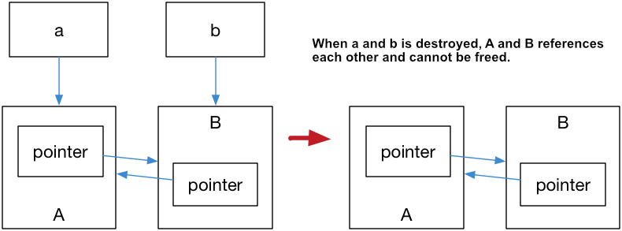

Book-en-us
- Preface
- Chapter 01: Towards Modern C++
- Chapter 02: Language Usability Enhancements
- Chapter 03: Language Runtime Enhancements
- Chapter 04 Containers
- Chapter 05 Smart Pointers and Memory Management
- Chapter 06 Regular Expression
- Chapter 07 Parallelism and Concurrency
- Chapter 08 File System
- Chapter 09 Minor Features
- Chapter 10 Outlook: Introduction of C++20
- Appendix 1: Further Study Materials
- Appendix 2: Modern C++ Best Practices
Chapter 05 Smart Pointers and Memory Management
5.1 RAII and Reference Counting
Programmers who understand Objective-C/Swift/JavaScript should know the concept of reference counting. The reference count is counted to prevent memory leaks.
The basic idea is to count the number of dynamically allocated objects. Whenever you add a reference to the same object, the reference count of the referenced object is incremented once.
Each time a reference is deleted, the reference count is decremented by one. When the reference count of an object is reduced to zero, the pointed heap memory is automatically deleted.
In traditional C++, "remembering" to manually release resources is not always a best practice. Because we are likely to forget to release resources and lead to leakage. So the usual practice is that for an object, we apply for space when constructor, and free space when the destructor (called when leaving the scope). That is, we often say that the RAII resource acquisition is the initialization technology.
There are exceptions to everything, we always need to allocate objects on free storage. In traditional C++ we have to use new and delete to "remember" to release resources. C++11 introduces the concept of smart pointers, using the idea of reference counting so that programmers no longer need to care about manually releasing memory.
These smart pointers include std::shared_ptr/std::unique_ptr/std::weak_ptr, which need to include the header file <memory>.
Note: The reference count is not garbage collection. The reference count can recover the objects that are no longer used as soon as possible, and will not cause long waits during the recycling process. More clearly and indicate the life cycle of resources.
5.2 std::shared_ptr
std::shared_ptr is a smart pointer that records how many shared_ptr points to an object, eliminating to call delete, which automatically deletes the object when the reference count becomes zero.
But not enough, because using std::shared_ptr still needs to be called with new, which makes the code a certain degree of asymmetry.
std::make_shared can be used to eliminate the explicit use of new, so std::make_shared will allocate the objects in the generated parameters.
And return the std::shared_ptr pointer of this object type. For example:
#include <iostream> |
std::shared_ptr can get the raw pointer through the get() method and reduce the reference count by reset().
And see the reference count of an object by use_count(). E.g:
auto pointer = std::make_shared<int>(10); |
5.3 std::unique_ptr
std::unique_ptr is an exclusive smart pointer that prohibits other smart pointers from sharing the same object, thus keeping the code safe:
std::unique_ptr<int> pointer = std::make_unique<int>(10); // make_unique, from C++14 |
make_uniqueis not complicated. C++11 does not providestd::make_unique, which can be implemented by itself:
std::unique_ptr<T> make_unique( Args&& ...args ) {
return std::unique_ptr<T>( new T( std::forward<Args>(args)... ) );
}As for why it wasn't provided, Herb Sutter, chairman of the C++ Standards Committee, mentioned in his blog that it was because they were forgotten.
Since it is monopolized, in other words, it cannot be copied. However, we can use std::move to transfer it to other unique_ptr, for example:
#include <iostream> |
5.4 std::weak_ptr
If you think about std::shared_ptr carefully, you will still find that there is still a problem that resources cannot be released. Look at the following example:
#include <iostream> |
The result is that A and B will not be destroyed. This is because the pointer inside a, b also references a, b, which makes the reference count of a, b becomes 2, leaving the scope. When the a, b smart pointer is destructed, it can only cause the reference count of this area to be decremented by one. This causes the memory area reference count pointed to by the a, b object to be non-zero, but the external has no way to find this area, it also caused a memory leak, as shown in Figure 5.1:
Figure 5.1
The solution to this problem is to use the weak reference pointer std::weak_ptr, which is a weak reference (compared to std::shared_ptr is a strong reference). A weak reference does not cause an increase in the reference count. When a weak reference is used, the final release process is shown in Figure 5.2:
Figure 5.2
In the above figure, only B is left in the last step, and B does not have any smart pointers to reference it, so this memory resource will also be released.
std::weak_ptr has no implemented * and -> operators, therefore it cannot operate on resources. std::weak_ptr allows us to check if a std::shared_ptr exists or not. The expired() method of a std::weak_ptr returns false when the resource is not released; Otherwise, it returns true.
Furthermore, it can also be used for the purpose of obtaining std::shared_ptr, which points to the original object. The lock() method returns a std::shared_ptr to the original object when the resource is not released, or nullptr otherwise.
Conclusion
The technology of smart pointers is not novel. It is a common technology in many languages. Modern C++ introduces this technology, which eliminates the abuse of new/delete to a certain extent. It is a more mature technology. Programming paradigm.
Further Readings
Changkun Ou © 2016-2025. The book is licensed under Creative Commons Attribution-NonCommercial-NoDerivatives 4.0, code is open sourced under the MIT License.
If you like the book, you could donate the author.